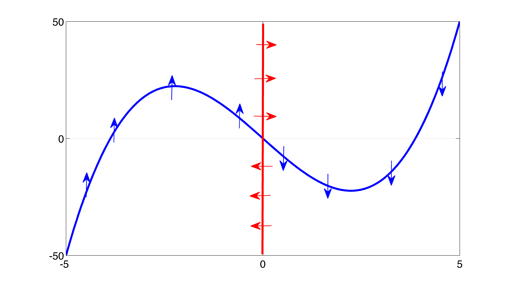
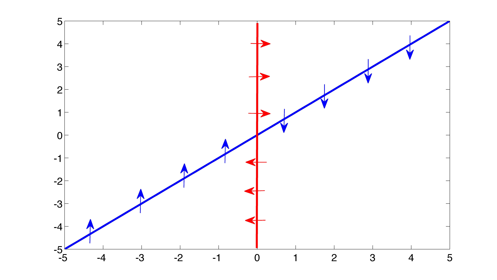
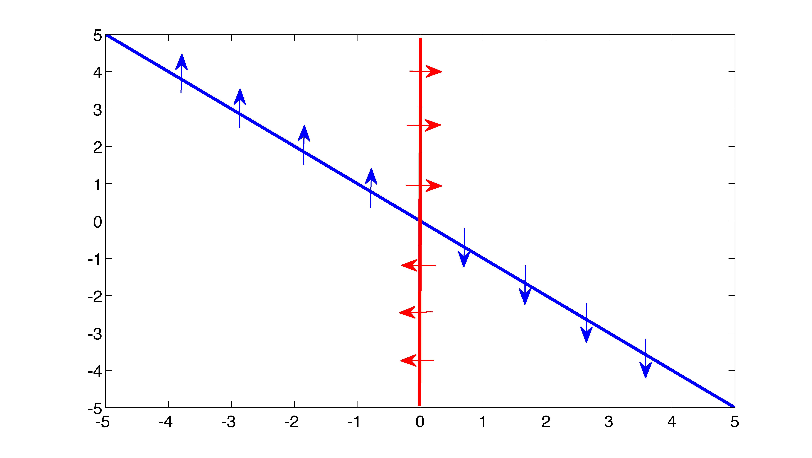
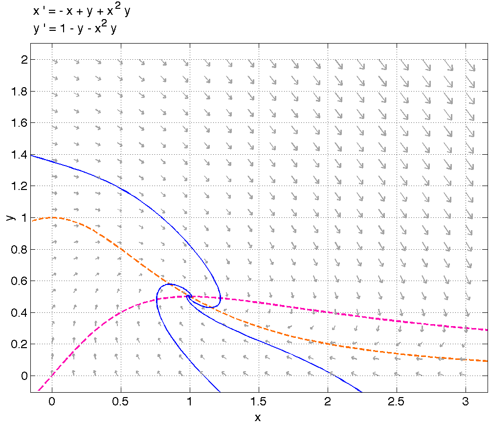
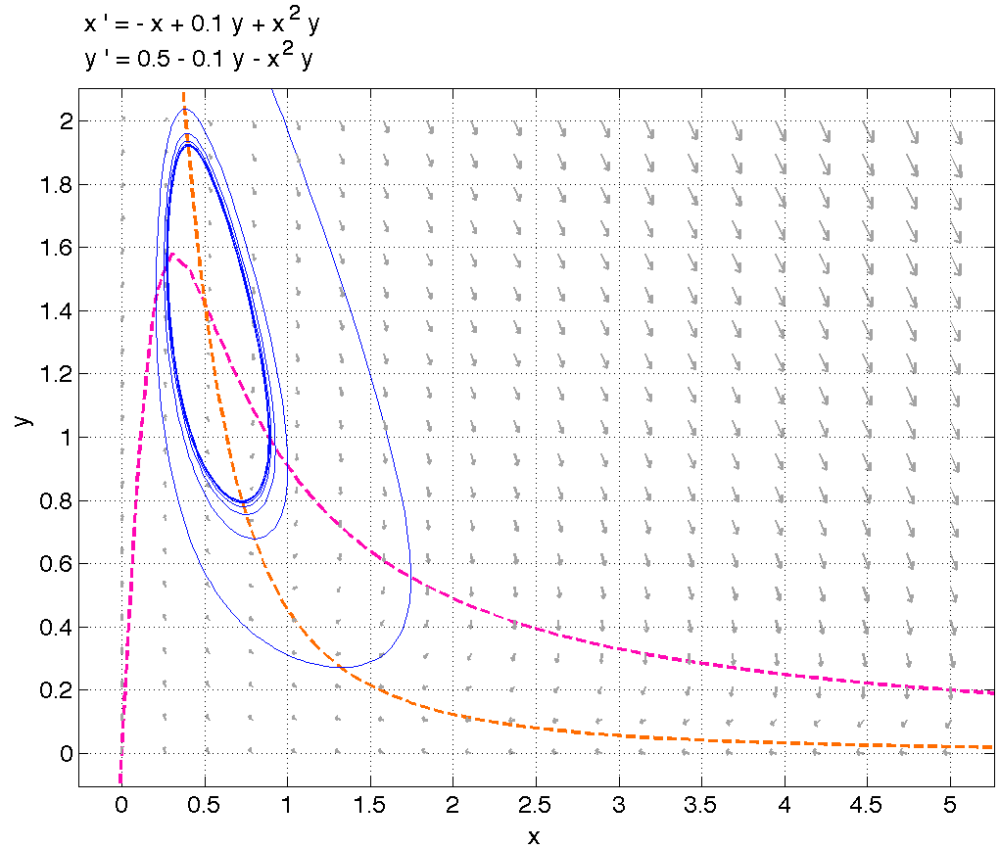
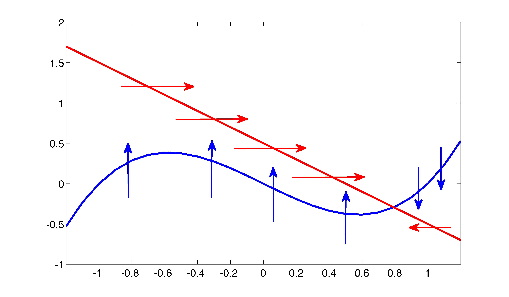
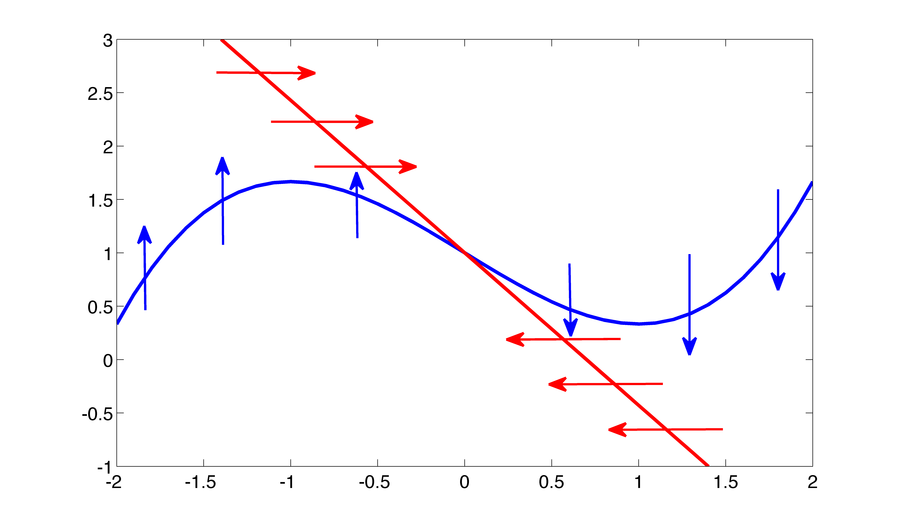

17 Nonlinear oscillations in biology
17.1 Introduction
In previous chapters we examined periodic solutions that arise in linear or conservative nonlinear systems. These solutions show up in the phase plane as closed trajectories, looping around a fixed point of the center classification; they are known as linear oscillations, since their time plots are oscillatory, and because the dynamics around the fixed point are correctly described by the linear approximation. In this chapter we will see a new kind of closed trajectories, known as nonlinear oscillations. These solution describe very different dynamics, which is found in many biological systems, characterized by cycles with excitatory and refractory phases, for example action potentials in neurons.
In the modeling section, we will see a simple prototype model which produces nonlinear oscillations, and then describe the qualitative properties of excitatory systems in biology. In the analytic section, we will describe some types bifurcations in the plane. In particular, we will describe the bifurcation which results in the birth of nonlinear oscillations. Finally, in the synthesis section we will analyze the classic neuroscience model of an action potential, called the Fitzhugh-Nagumo model.
17.2 Modeling: nonlinear oscillations
17.2.1 Van der Pol oscillator
Let us consider a harmonic oscillator model with a nonlinear damping term, known as the van der Pol oscillator (here \(k\) and \(\mu\) are positive parameters):
\[m\ddot x= -kx - \mu(x^2-1)\dot x \]
This equation is similar to the damped harmonic oscillator equation we saw in the chapter 10, but in this model the damping coefficient, or the multiplier of velocity \(\dot x\), is \(\mu(x^2-1)\) and thus depends on the variable \(x\). If \(x>1\), the coefficient of damping is positive (with a negative sign in front) and there are damped harmonic oscillations. However, if \(x<1\), the coefficient is negative, so instead of damping, there is amplification of oscillations. Let us write this as two first-order ODEs, and analyze its behavior is the phase plane.
\[ x' = y \] \[ y' = -\frac{k}{m}x - \frac{\mu}{m}(x^2-1)y \]
There is only one fixed point, at \(x=0, y=0\). It is unstable because of the amplification (reverse damping) effect when \(x\) is small. This can be properly shown by linearizing around the fixed point and finding the eigenvalues - we’ll leave it as an exercise. However, since damping kicks in for \(x>1\) and is stronger for higher values of \(x\), trajectories that start far away from the origin will flow toward it. The effect of the outward flow from the origin combined with flow toward the origin (from trajectories that start sufficiently far away) creates a new type of periodic trajectory, called a limit cycle.
17.2.2 oscillatory behavior in biology
The properties of linear oscillations do not correspond well to periodic behavior in living systems. Closed trajectories around center points can have any amplitude as determined by the initial conditions, and a frequency which is determined by the eigenvalues of the Jacobian, therefore independent of the amplitude of oscillations. In biological systems (and many other natural systems) periodic behavior typically has an optimal period as well as an optimal amplitude. For instance, the action potential of a neuron, as we will discuss in the Synthesis section, has a well-defined maximum and minimum membrane voltage, as well as a set period between peak voltages (neuron firing). Other periodic biological processes, such as oscillations in metabolism or circadian rhythms, share the same property of having well-defined frequency and amplitude. For a mathematical modeler this suggests constructing dynamical systems that have a unique and attracting periodic trajectory.
There are several common features of biological oscillatory models. One is the competitive interplay between an inhibiting and activating species, which are commonly seen in biochemical reactions or gene regulatory models. We will see such an example in the model of oscillations in glycolysis. The other is the so-called excitable systems, in which there is a threshold value, for stimulus to produce an oscillatory response. Such systems have oscillations which are divided into fast stages of excitation and slow stages of relaxation. We will see a prototypical model of this kind in the Synthesis section.
17.3 Limit cycles and flow-trapping regions
17.3.1 limit cycles
There is an important result in dynamical systems theory that states that the only possible attractors (sets of points which solutions approach in the long run) in two dimensions are either fixed points (steady states) or closed orbits (oscillations). We saw linear oscillations in the harmonic oscillator model, and the oscillatory solutions in the Lotka-Volterra model similarly correspond to an infinite set of closed trajectories. Below we consider circumstances under which unique closed trajectories arise.
A limit cycle is an isolated closed trajectory, which makes it different from oscillations around a center. Limit cycles can be stable (with nearby trajectories spiraling toward it), unstable (with nearby trajectories spiraling farther away) and half-stable (inner trajectories and outer trajectories behaving differently). This phenomenon requires some nonlinearity in the equations, like the nonlinear damping above, and thus limit cycles are known as nonlinear oscillations. Limit cycles cannot be found by linearization (since it neglects the essential nonlinearity), so we need another method.
A region of the phase plane which contains no stable fixed points, and for which the direction of the flow everywhere on the boundary is inward, must contain a limit cycle.
Another important difference between linear and nonlinear oscillations is in robustness of the solutions to changes in parameters. Linear centers are fragile with respect to parameter changes, because in order for the eigenvalues to be purely imaginary, the trace of the matrix (sum of the diagonal elements) has to be exactly 0, and the smallest deviation will destroy the closed orbits, transforming them into a spiral. Limit cycles, in contrast, are generally robust to parameter changes, because a small change will not dramatically affect the direction of the flow into the region of Poincare-Bendixson Theorem.
This result allows us to find limit cycles around fixed points by checking if there is a region with flow oriented in the opposite direction from that near the fixed point. In practice, finding such a region may be difficult, so we demonstrate one common type of ODE which satisfied the conditions of the theorem.
17.3.2 Example: cubic nullclines
One common type of models in physics and biology which has limit cycle solutions are those with cubic terms in the governing ODEs. For instance, there is a class of models that look as follows:
\[ x' = y - f(x) \] \[ y' = -x \]
This system has nullclines on the curves: \(y=f(x)\) and \(x=0\) (y-axis). If the function \(f(x)\) is a cubic function with a maximum and a minimum, e.g. \(f(x) = x^3-x\), then the phase plane will look like figure {numref}fig-cub-null.

Let us analyze the geometry of the flow. First, there is only one fixed point, at the origin, and the flow may circulate around it. To show that a limit cycle exists, we must:
- Show that the fixed point is unstable
- Show that there is a region surrounding the fixed point, with inward flow on the boundary
First, we will show geometrically that whether the flow is attracted to or repelled by the fixed point depends on the slope of the function \(f(x)\). To see this analytically, let’s do the linearization procedure of this ODE. The Jacobian matrix of the ODEs is:
\[ J(x,y) = \begin{pmatrix} -f'(x) & 1 \\-1 & 0 \end{pmatrix} \]
To assess stability, we find the eigenvalues:
\[ \lambda = \frac{-f'(x) \pm \sqrt{f'(x)^2 -4}}{2} \]
The eigenvalues are real if \(f'(x)^2 >4\) and complex if \(f'(x)^2 <4\). If they are complex, the real part is \(-f'(x)/2\), and so the stability is determined by the sign of \(f'(x)\). If the eigenvalues are real, stability still depends on the sign of \(f'(x)\), because \(f'(x)>\sqrt{f'(x)^2 -4}\) and thus adding or subtracting the square root will not change the sign of the expression. Check for yourself the direction of the flow on the nullclines (e.g. for the \(y\)-nullcline, on which \(\dot y = 0\), we need to consider when \(\dot x > 0\) and when \(\dot x < 0\)). In figure {numref}fig-pos-slope, the horizontal flow coming off the y-axis misses the nullcline that would turn it around, while in figure {numref}fig-neg-slope, the horizontal flow runs right into the positive-sloped nullcline. Thus, when \(f'(x) <0\), the fixed point is stable (either a node or a spiral), and when \(f'(x) > 0\), the fixed point is unstable (either a node or a spiral). As a corollary, when the two nullclines are perpendicular, the fixed point is a center.


Now let us go back to the cubic nullcline in figure {numref}fig-cub-null. It should be clear that there is a trapping region of phase space, because at any point sufficiently far from the origin, the direction of flow is toward the origin. Intuitively, the directions of flow on the nullclines ensure that the flow heads down on the right hand side of the plane, and upward on the left-hand side of the plane; the flow is trapped by the cubic “arms” of the graph of \(f(x)\). One can construct a flow trapping-region more rigorously, but I will leave this as a potential exercise for the reader. Therefore, as long as there is an unstable fixed point inside a flow-trapping region, which is determined by the slope of \(f(x)\) at the intersection of the nullclines, the Poincare-Bendixson theorem ensures the existence of a limit cycle in that region. This result is used in many biological models.
17.3.3 Example: glycolytic oscillator
The metabolism of glucose to produce energy in the form of ATP (adenosine triphosphate) is a crucial process in most lifeforms. The process involves many stages, most of which involve phosphorylation, or attachment of a phosphate group, and each one is catalyzed by a specialized enzyme. One intermediate step involves the phosphorylation of Fructose 6-phosphate (Fru-6P) to produce Fructose 1,6-biphosphate (Fru-1,6bP), by an enzyme called phosphofructokinase (PFK). In many organisms this step is known to lead to periodic oscillations in the concentrations of the molecules involved.
The reaction involves several types of molecules: the two sugars, the enzyme, and a molecule of ATP and ADP:
\[ Fru-6P + ATP + PFK \rightarrow Fru-1,6bP + ADP + PFK \]
One other key feature is that one product of this reaction, ADP, allosterically activates the enzyme PFK, therefore leading to more ADP and Fru-1,6bP production. We will model these processes by keeping track of two dynamic variables: concentration of Fru-6P (\(y\)) and concentration of ADP (\(x\)). The other species are closely related to these two, and the concentration of PFK is assumed to stay constant.
ADP is produced with a rate proportional to the concentration of Fru-6P, but this rate depends on the concentration of ADP. Because it is known that two molecules of ADP need to bind to activate PFK, this dependence is quadratic, by the principles of mass action. In addition, ADP is depleted at a rate proportional to its concentration by other cellular processes. The situation for Fru-6P is opposite, since it is depleted by this reaction. It is depleted at the rate which is a constant plus the square of ADP concentration. It is supplied with a constant rate from the upstream reaction, and thus independent of its own concentration. These assumptions were expressed in a simple, dimensionless model proposed by Sel’kov:
\[ x' = -x + (a+x^2)y \] \[ y' = b - (a+x^2)y \]
Let us examine this model by our usual methods. First, let us find the nullclines: for \(x\) the nullcline is \(y = x/(a+x^2)\), and for \(y\) the nullcline is \(y=b/(a+x^2)\). These nullclines intersect at a single point \(x=b\) and \(y=b/(a+b^2)\). The Jacobian of the ODE is:
\[ J(x,y) = \begin{pmatrix} -1+2xy & a+x^2 \\ -2xy & -(a+x^2)\end{pmatrix} \]
and at the fixed point, the matrix is
\[ J(b,b/(a+b^2)) = \begin{pmatrix} -1+2b^2/(a+b^2) & a+b^2 \\ -2b^2/(a+b^2) & -(a+b^2) \end{pmatrix} \]
The Jacobian has determinant \(\Delta = a+b^2\) and trace
\[\tau = -\frac{b^4+(2a-1)b^2+(a+a^2)}{a+b^2}\]
Since the eigenvalue expression is this: \(\lambda = (\tau \pm \sqrt{\tau^2-4\Delta})/2\), and the determinant is strictly positive, the stability of the fixed point depends solely on the sign of the trace. Doing a little algebra we can find the curve which divides the stable and the unstable region in the \(a\)-\(b\) parameter plane:
\[ b^2 = \frac{1}{2}\left(1-2a \pm \sqrt{1-8a} \right)\]
The second step in finding nonlinear oscillations is searching for a flow-trapping region. I will leave out the details here, but one can construct the following region, in which the direction of flow on the boundary is everywhere inward. One boundary is the \(y\) axis from 0 to \(b/a\). The second boundary is the line from \((0,b/a)\) to \((b,b/a)\). the third segment is the line with slope -1, from the point \((b,b/a)\) to the \(x\) axis, and the final boundary is the \(x\) axis between (0,0) and the intersection with that line.
Now that we have a flow-trapping region, which is independent of parameters, the existence of limit cycle depends on the stability of the fixed point inside the region. We have shown that for some values of \(a\) and \(b\), the fixed point is unstable, and thus Poincare-Bendixson predicts the existence of a limit cycle. Figure {numref}fig-glyco-stable shows the flow and a solution trajectory for the case where the fixed point is stable, and figure {numref}fig-glyco-cycle shows the phase portrait when the fixed point is unstable and a solution converging to a limit cycle.


17.4 Fitzhugh-Nagumo model of neural excitation
Limit cycles are often used to model excitable systems, in which spikes of activity are followed by a period of relaxation. One such example is the action potential of a neuron, consisting of a quick spike and the depolarization of the potential built up across the membrane, followed by a slow return to the resting potential. A very simple, albeit largely unrealistic, model is one proposed independently by Fitzhugh and Nagumo. In this model, the meaning of the variables is approximate, with \(x\) standing in for the membrane potential, and \(y\) signifying the extent of the recovery via active pumping of ions, and \(z(t)\) representing the external stimulus, such as an action potential from a connected neuron:
\[ x' = c\left(y+x- \frac{x^3}{3}+z(t)\right) \] \[ y' = -\frac{x-a+by}{c} \]
To properly analyze the stability of the fixed point, find the Jacobian of the Fitzhugh-Nagumo model, which does not depend on the value of the inhomogenous term \(z(t)\):
\[ J(x,y) = \begin{pmatrix} c - x^2 & 1 \\ -1 & b/c \end{pmatrix} \]
The eigenvalues of the Jacobian are:
\[\lambda = \left(c-x^2+b/c \pm \sqrt{(c-x^2+b/c)^2 - 4(b-bx^2/c +1} \right)/2\]
As you can see, the analysis of stability by algebra is going to be painful, since we need to find the expressions for the fixed point and express it in terms of the parameters and the stimulus \(z(t)\). Instead, we are going to use the qualitative analysis we developed in the analytic section to analyze the existence of limit cycles in the phase plane.
The nullclines of this system are similar to those in the generic cubic model analyzed above. The nullcline for \(\dot x\) is given by \(y=x^3/3 -x -z(t)\), which is a cubic with a max and a min, with an extra term added. The nullcline for \(\dot y\) is given by \(y=(a-x)/b\), a negative-slope line, as opposed to the vertical line in the model above, but the directions of the flow relative to the blue nullcline remain the same (check by analyzing the equation for \(\dot x\)).
Depending on the values of the parameters, and on the value of the external input \(z\), the nullclines may intersect in different ways. If the cubic at the intersection has a positive slope, that, as we saw above, the fixed points will be stable, as can be seen seen in figure {numref}fig-fn-stable. If the line and cubic intersect in the negative-slope part of the cubic, then the fixed point is unstable, as illustrated in figure {numref}fig-fn-unstable.


As we saw above, if the fixed point is unstable and the shape of cubic prevents the flow from leaving a larger region, then there must exist a limit cycle. On the other hand, if the fixed point is stable, then there is no limit cycle. So the Fitzhugh-Nagumo provides a simple model for the transition between a resting state with constant voltage (stable fixed point) to the excited state where periodic action potentials are generated (limit cycle). The readers can convince themselves that the addition of the external signal \(z(t)\) can lead to this transition.